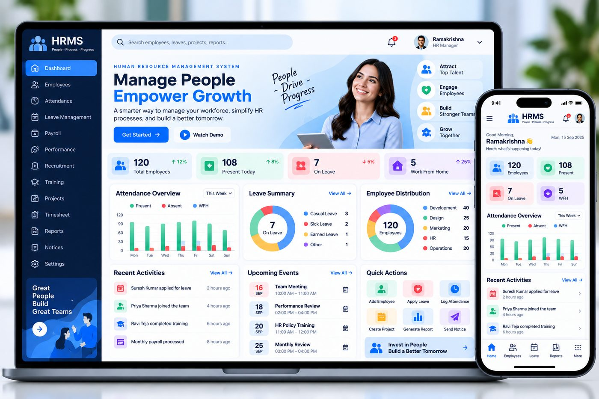
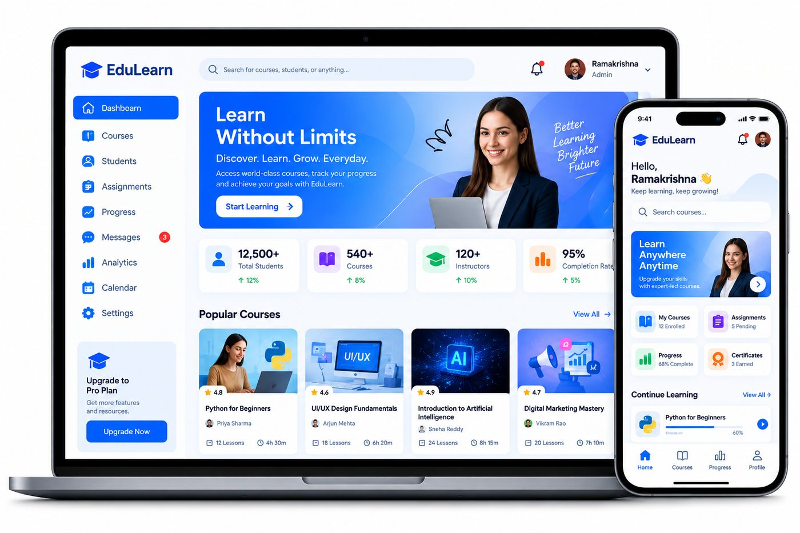
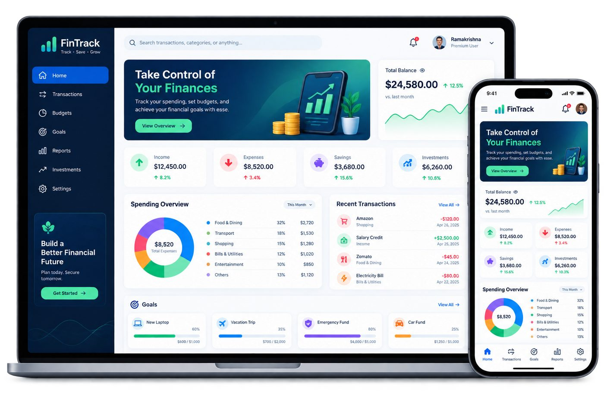
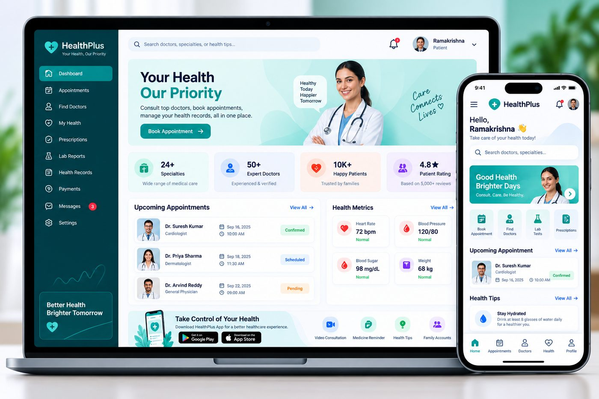

Web Development
Fast, mobile-first websites and storefronts that load quickly and make it easy to enquire or buy.
- Corporate & business sites
- E-commerce stores
- Portfolios & landing pages
Business websites, web applications, custom software and AI automation — designed, engineered and shipped by one team, in Hyderabad.
No hand-offs between sales, design and engineering. The people who scope your project are the people who build it.
Explore services Or start from the problem you haveFast, mobile-first websites and storefronts that load quickly and make it easy to enquire or buy.
Dashboards, portals and internal tools that replace spreadsheets, WhatsApp threads and manual follow-ups.
Assistants, document processing and workflow automation that give your team hours back every week.
Research, wireframes and design systems that make complicated products feel obvious to use.
A cross-section of what the team ships: people-facing products, internal tools and stores.
View all workThese are our own builds and concept products. Client delivery work — including SiteTrack and the Vayomi Clothing store — is covered in the case study below.

Human resource management for growing teams — employee records, attendance, leave, payroll and performance in one place, with role-based access for HR and managers.

A learning platform for institutions — course catalogues, enrolments, progress tracking, assessments and a learner view that works on any device.

Personal finance control — accounts, budgets, goals and spending breakdowns presented as a single clear picture instead of a bank spreadsheet.

A clinic operations platform — appointments, patient records, prescriptions and billing, designed for front-desk and doctor workflows rather than generic admin screens.
We stay deliberately small so the people you meet in the first call are the people who write the code. How we work.
A predictable five-stage process with a fixed scope, a fixed timeline and a handover you actually understand.
We learn your process, your constraints and what "working" means for you.
A written brief, feature list, timeline and estimate before any code is written.
Wireframes and a working design system, reviewed with you before build.
Iterative development with a live preview you can open and use at every stage.
Deployment, handover, training and a support window after go-live.
The people on your call are the people who write and review the code.
Agreed in writing up front, with change requests priced before they start.
Clean code, documented setup and a walkthrough so your team can own it.
A support window, then ongoing maintenance and feature work if you want it.
SiteTrack gives site managers a live view of where each building stage stands, who is assigned to it and what was completed that day. It replaced a wall of spreadsheets and a daily WhatsApp status meeting.

Delivered as a responsive web application with role-based access for site managers, supervisors and head office.
We are a young studio, so we publish what we have rather than padding the page with quotes we cannot stand behind.
“VALTORIX built our Vayomi clothing store with a clear catalogue and an easy enquiry flow. Support has been responsive throughout.”
“Our HRMS work helped us pull employee data, attendance and payroll into one place instead of three different files.”
“SiteTrack helped our team follow construction stages and daily site updates far more clearly than the register we used before.”
Something not covered here? Ask us directly — we reply within 24 hours on business days.
Contact usBusiness websites and e-commerce stores, web applications and dashboards, custom business software such as HRMS, AI and workflow automation, plus UI/UX and product design. We also maintain software we built and software we inherited.
A focused marketing website typically takes 2–4 weeks. A business application with roles, reports and integrations usually runs 6–12 weeks depending on scope and the number of screens. You get a dated plan before we start.
Yes. Every launch includes a handover session covering how the system is structured and how to make changes safely. After that you can take it in-house or keep us on a support and feature retainer.
It depends on scope, and we would rather give you a real number than a range. After a free scoping call you receive a written estimate with line items so you can see exactly what you are paying for.
React, Node.js, Python, PHP, MySQL, MongoDB, AWS and Figma. We choose per project based on the problem, who will maintain it afterwards and the budget — not on a fixed default stack.
Send a project request or use the contact form. We reply within 24 hours on business days with questions, a proposed approach, a timeline and an estimate. No obligation at any point.
Send the brief, the half-formed idea, or just the problem. We will come back with an approach, a timeline and a cost — free, and with no obligation.